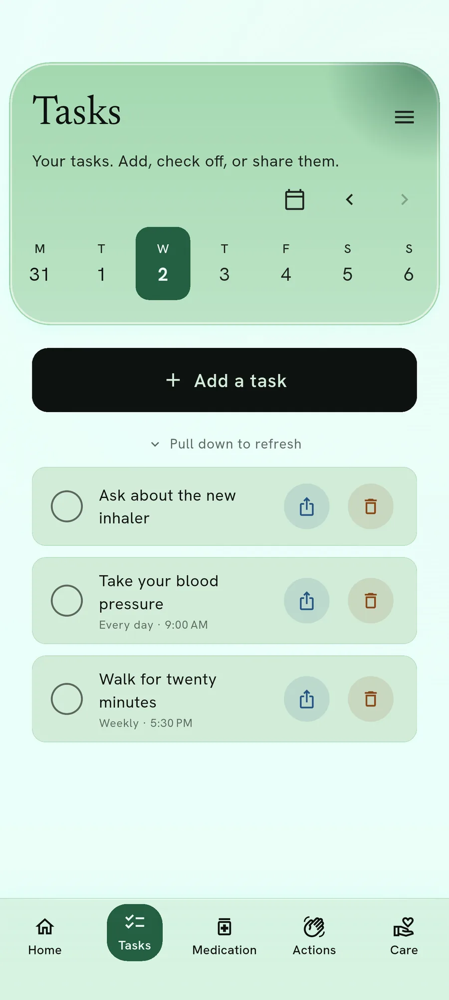
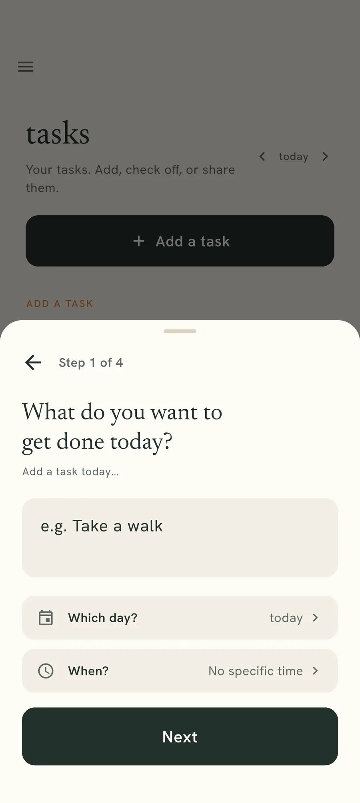
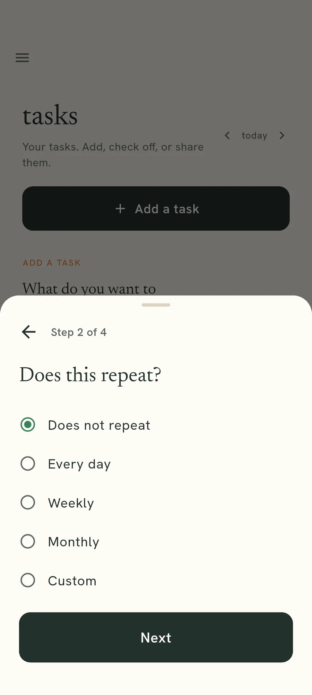
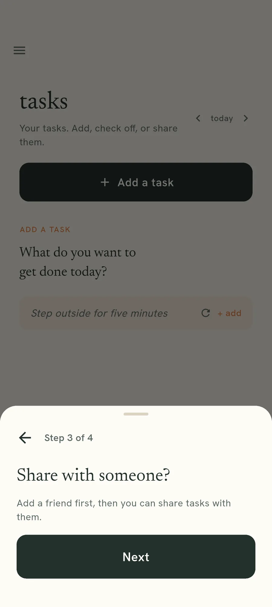

Tasks
The bits with no number attached.
An appointment, a repeat prescription, a form to send back. They sit here instead of in your head.

What Tasks holds
Anything around your health that is not a reading. Some of it has a date and comes to find you; some of it just waits until you want it.
A task can repeat, which is what a weekly tablet order or a monthly form actually is.
A day at a time, or any day
The date at the top moves to any day, so something you finished last month is still there.
Why it is not a general to-do list
Because a general list fills with everything else, and then the prescription you needed to reorder is somewhere below the shopping.
Keeping it to health admin means the list stays short enough to be worth opening.
Adding, repeating and sharing
Set a date if it has one
A dated task rises to the top on the day it is due. Without a date it simply waits.

Choose whether it comes back
A weekly tablet order is set up once and returns on its own.

Share one with a friend
Both of you see it and either can tick it off. The words of a shared task are locked before they leave your phone, and we cannot read them.

Everything here runs on your own phone
No account, no email address, and no reading of yours on our servers. You can check that rather than take our word for it.